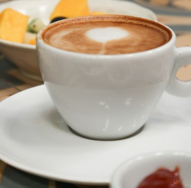
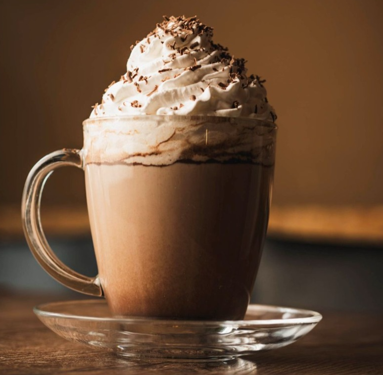

Misión
Ofrecer una experiencia gourmet en un ambiente acogedor, donde cada cliente pueda disfrutar plenamente de su momento, a través de productos de alta calidad y un servicio excepcional.

En El Arte del Caffè, nos apasiona ofrecer experiencias únicas a través de cada taza. Más que una cafetería, somos un espacio donde el sabor, la calidad y la calidez se fusionan para brindar momentos inolvidables.
Ofrecer una experiencia gourmet en un ambiente acogedor, donde cada cliente pueda disfrutar plenamente de su momento, a través de productos de alta calidad y un servicio excepcional.
Ser reconocidos como una cafetería líder en ofrecer experiencias memorables, combinando la excelencia en café gourmet con un entorno que invite al disfrute y la relajación.
Café premium recién molido, garantizando frescura y sabor intenso en cada taza.

Especialidades artesanales como espresso, latte, cappuccino, y más para todos los gustos.

Ambiente cálido y acogedor, el lugar perfecto para relajarse o trabajar con una taza en mano.
Intenso y aromático, preparado con granos seleccionados de alta calidad para una experiencia auténtica.
Suave y cremoso, con leche vaporizada artesanal que complementa el café perfectamente.
Equilibrio ideal entre café, espuma y leche para un sabor clásico delicioso.
"El mejor café que he probado, el ambiente es increíble."
- Juan Pérez"Un lugar perfecto para relajarse y disfrutar de un buen café."
- María López"Excelente servicio y una gran variedad de opciones en el menú."
- Carlos García